Project Brief
A project of three millimeter wave(mmWave) applications.
Heartbeat Gragh, Fluid Level Transmitter and Gesture Detection.
Project Objectives
- Heartbeat Graph
- Fluid Level Transmitter
- Gesture Detection
Heartbeat Graph
Used to measure patients' heartbeat and breath, it is designed for the elderly who live alone or people who have been suspected of contracting COVID-19 and are isolating. This can be used to track their health condition.
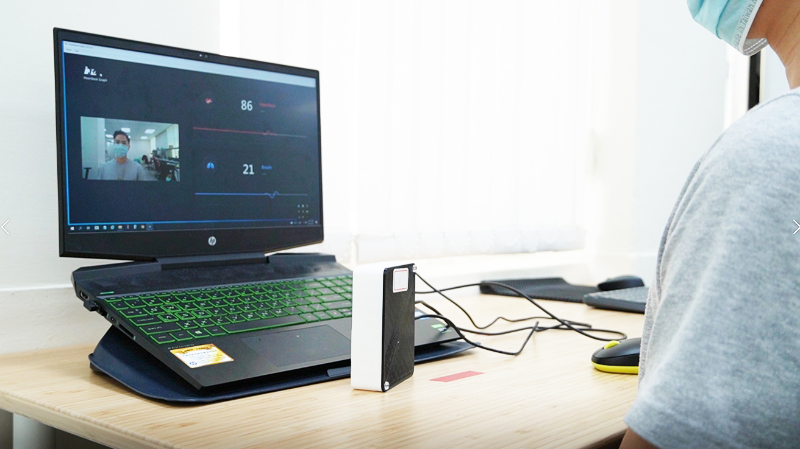
Individual Version of Heartbeat Graph
This is for the elderly who live alone or people who contracted COVID-19 and need to be isolated.
Feature 1
Easily Distinguishable
The interface for detecting physiological conditions needs to be timely and easy to read. Red as heartbeat, blue as breath, in order to let users can differ them easily.
Feature 2
Webcam Function
The interface can transform the image of the patient, and medical personnel can observe their situation.
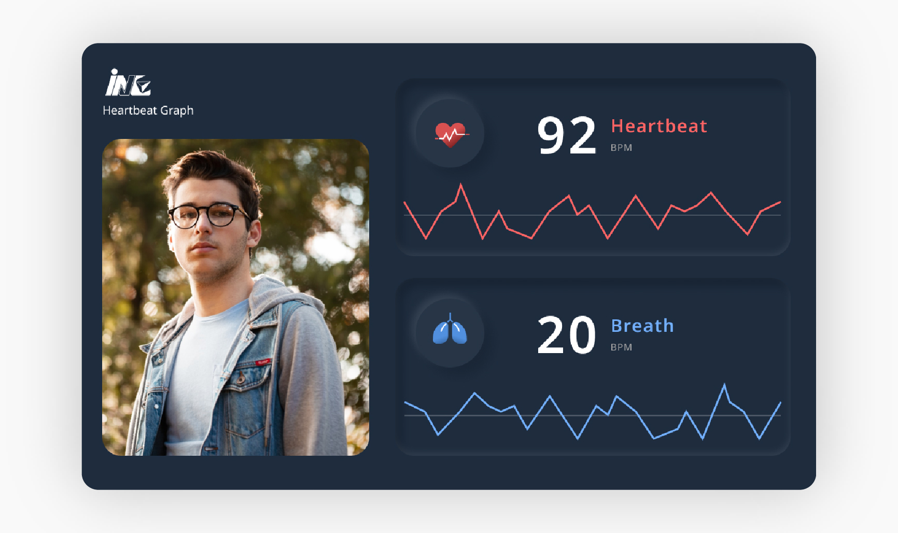
Group Version of Heartbeat Graph
Objective/ Patients who live in the hospital and need to be carefully tracked.
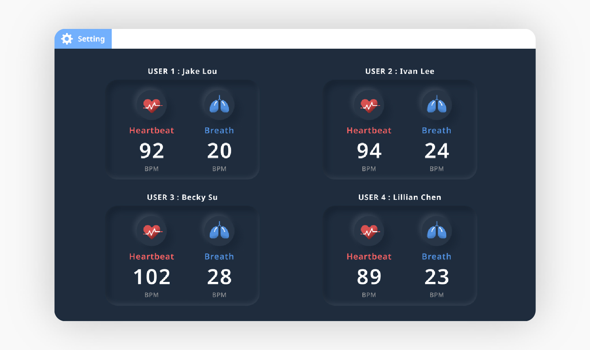
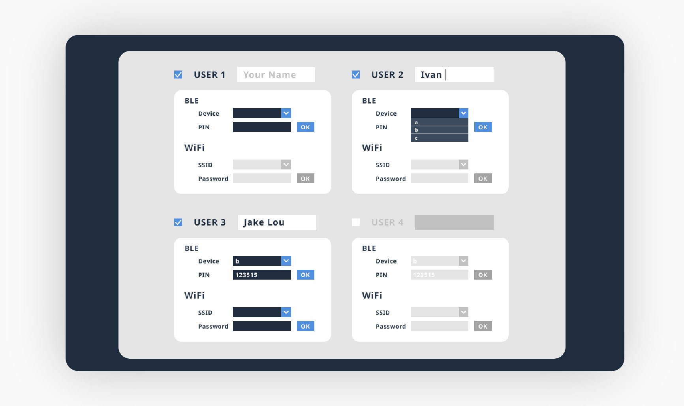
Feature 1
Intuitive Arrangement
The patients' information are arranged in the same way as the hospital beds. Medical personnel can set up the device connection of patient in an intuitive way, and it's easy for medical personnel to mange information.
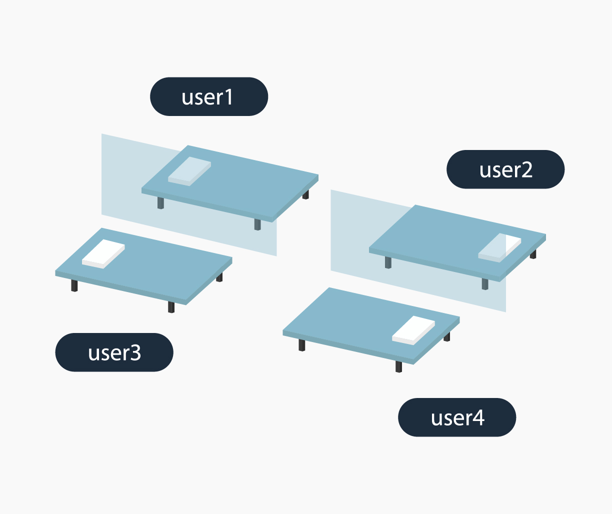
Feature 2
Alarm!
When detecting an abnormal condition of the patient, the block becomes red.
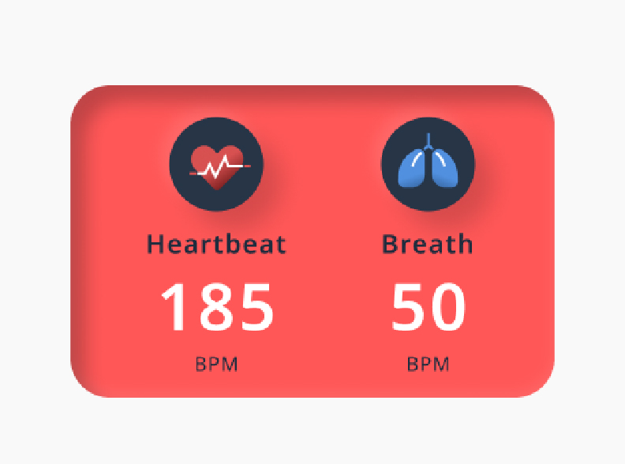
Fluid Level Transmitter
The millimeter wave can measure the liquid level in large tanks to reduce the inconvenient measurement methods. It is suitable for chemical factories to avoid people from contacting chemical liquid.
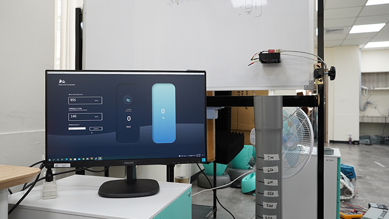
Feature
Intuitive Display
The depth of the water is simulated in a way which allows users to quickly understand whether the liquid level is increasing or decreasing, liquid on the interface will change just like real liquid. Although neumorphism style is hard for engineering, the outcome of the interaction is worth it.
Challenge
Order of Input
In this project, I have different thoughts against to the engineers at first. They wanted to put “serial port” input box at the top of interface just like general system settings. However, consider of this setting needs to follow by steps, if the “serial port” input box isn’t at the last, it’s not a smooth setting progress for users, so I persued them to put the input box next to the “save” button.
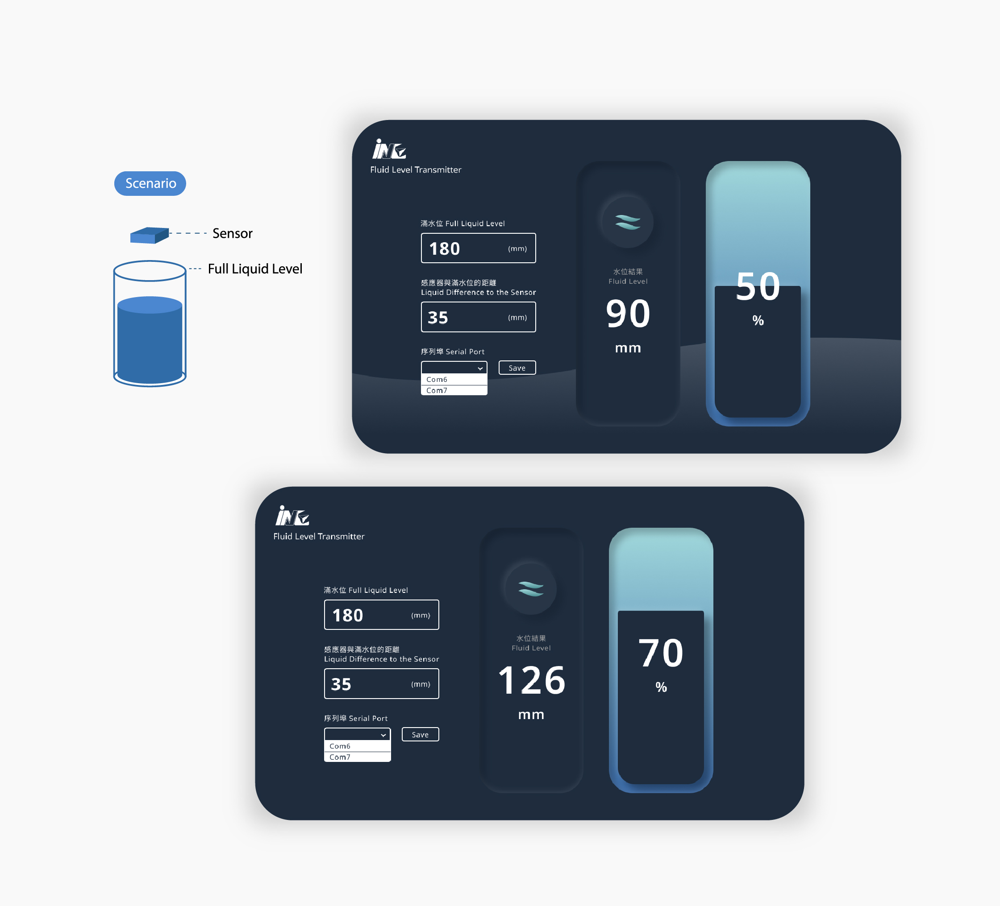
Gesture Detection
Gesture detection can detect up, down, left, right, clockwise and counter-clockwise gestures. This technology can be used in many products, including automotive products.
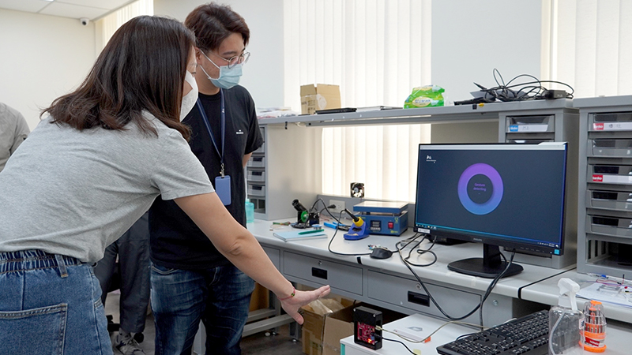
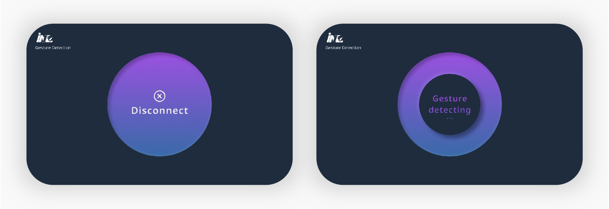
Feature
Interactive and Fun!
The sensor can detect hand gestures, includes up, down, right, left, clockwise and counter-clockwise, then the interface will react instantly. I designed a moving and deforming graph, to make it interesting and interactive.
Scenario
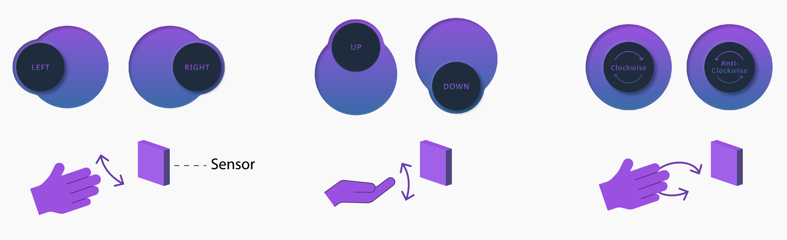